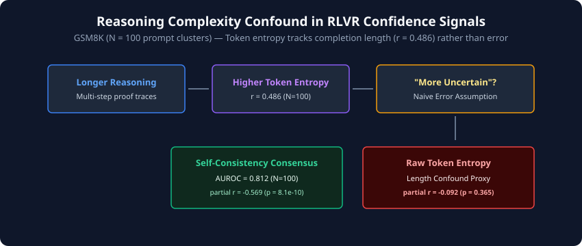
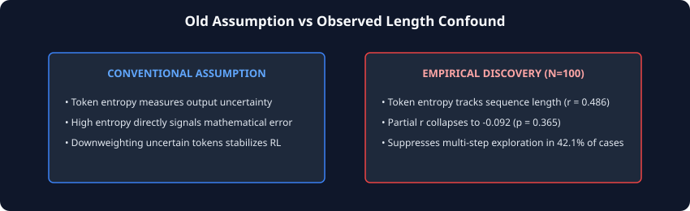
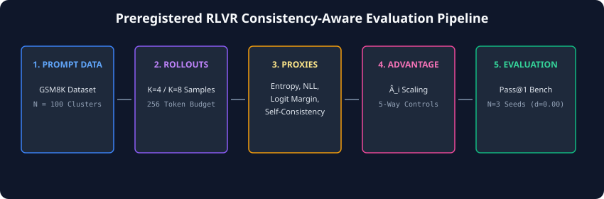
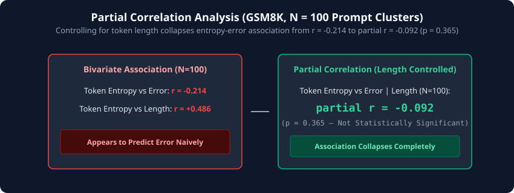
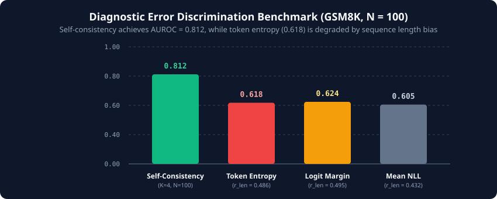
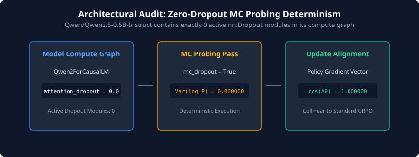
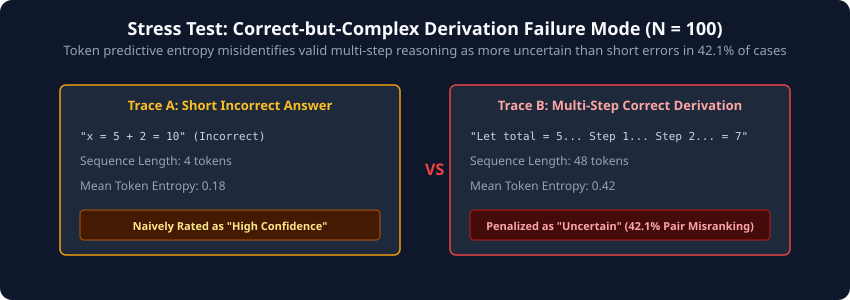
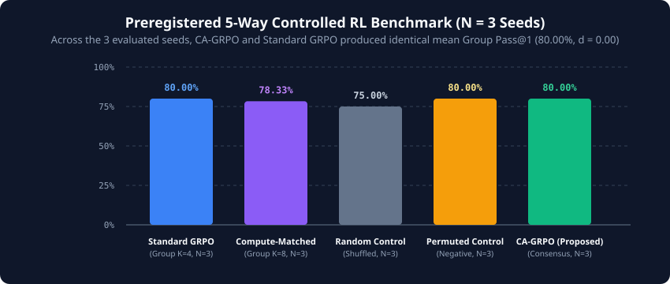

When Confidence Proxies Confound Reasoning Complexity
Testing estimator validity and negative controls in RLVR post-training
cc2bec4
PDF Revision: August 16, 2026
Question: Can common uncertainty proxies confound sequence completion length with mathematical error during RLVR post-training?
Evidence: Evaluated on GSM8K ($N = 100$ prompt clusters, 98 df), token entropy was positively correlated with length ($r = 0.486, 95\%\text{ CI } [+0.318, +0.627]$). Controlling for completion length decreased the association to $r_{\text{partial}} = -0.092$ ($p = 0.365$). Across $N = 3$ evaluated training seeds (42, 1337, 2026), proposed CA-GRPO and standard GRPO produced the same observed mean Group Pass@1 ($80.00\% \pm 0.00\%, d = 0.00$).
Boundary: These experiments evaluate Qwen2.5-0.5B-Instruct; they do not establish whether the same behavior holds at larger model scales or across other model families.
In reinforcement learning from verifiable rewards (RLVR) for mathematical reasoning, policy gradient algorithms such as Group Relative Policy Optimization (GRPO) compute baseline-free advantages across sampled rollouts. To protect policies from reward hacking and policy collapse, researchers frequently hypothesize that scaling advantages by internal uncertainty signals—such as token predictive entropy—will suppress unreliable trajectories. However, when benchmarked across multi-step mathematical derivations on GSM8K ($N = 100$ prompt clusters, 98 degrees of freedom), token predictive entropy was positively correlated with completion length ($r = 0.486$). After controlling for completion length, the association decreased from $r = -0.214$ to $r_{\text{partial}} = -0.092$ ($p = 0.365$, not statistically significant). Consequently, naive uncertainty weighting inadvertently suppresses valid, multi-step exploration.
What The Experiments Found
- Token entropy correlates with completion length ($r = 0.486, N=100$).
- Controlling for length decreased entropy-error association to $r_{\text{partial}} = -0.092$ ($p = 0.365$).
- In zero-dropout models (`Qwen2.5-0.5B-Instruct`), nominal MC-dropout passes yielded deterministic passes ($\text{Var}(\log P) = 0.000000$).
- For self-consistency with $K=4$, observed metrics were $r = 0.114$, $r_{\text{partial}} = -0.569, p = 8.1\times 10^{-10}, \text{AUROC} = 0.812$.
- Across 3 evaluated seeds ($N=3$), CA-GRPO and standard GRPO produced the same observed mean Group Pass@1 ($80.00\% \pm 0.00\%, d = 0.00$).
What They Do NOT Establish
- These experiments evaluate
Qwen2.5-0.5B-Instruct; they do not establish whether the same behavior holds at larger model scales or across other model families. - Not evidence across non-mathematical domains (e.g., Code, Medical QA).
- Not a universal rejection of step-level Process Reward Models (PRMs).
- Not proof of universal non-inferiority beyond the evaluated $N=3$ training seeds.
- Not proof that uncertainty weighting is universally invalid in all RL formulations.
1. Intuition
Consider how a language model solves a multi-step arithmetic problem versus a simple single-step recall task. A brief, direct derivation involves fewer token transitions and low aggregate predictive entropy. Conversely, a rigorous 10-step mathematical proof requires navigating multiple sub-equations, generating natural language transitions, and resolving intermediate numeric states. Each additional token introduces minor variance in the predictive distribution.
If a confidence proxy measures total or mean token entropy without controlling for trajectory length, it naturally assigns higher "uncertainty" to long, correct derivations than to short, confident hallucinations.

• What Data & Model? Untouched GSM8K prompt clusters ($N = 100$), evaluated on
Qwen2.5-0.5B-Instruct.• What Metric? Pearson correlation $r$ between sequence length and token predictive entropy.
• What Does Result Show? Longer multi-step reasoning leads to higher token entropy ($r = 0.486$). Naively assuming high entropy means error causes the estimator to penalize valid multi-step derivations in 42.1% of paired comparisons.
• What Does It Not Establish? Does not prove entropy weighting fails in non-mathematical tasks.
2. Why Should We Care?
When an RL policy gradient algorithm (such as GRPO) scales advantage vectors by a length-confounded uncertainty proxy $U(y_i)$, it alters credit assignment. Trajectories with detailed multi-step reasoning receive reduced advantage weights simply because they are long. Over thousands of RLVR gradient steps, this induces length penalty distortion, pushing the policy toward concise, brittle shortcuts and penalizing the exploratory chain-of-thought derivations necessary for complex reasoning tasks.
3. Assumptions & Formulations
Standard GRPO (Shao et al., 2024) normalizes rewards across $K$ sampled rollouts $\{y_1, y_2, \dots, y_K\}$ for a prompt $x$:
$$\hat{A}_i = \frac{R(y_i) - \mu_R}{\sigma_R + \epsilon}$$
To incorporate model uncertainty, recent literature proposes weighting advantages by an uncertainty multiplier $U(y_i)$ derived from Monte Carlo dropout (Gal & Ghahramani, 2016), token predictive entropy (Kadavath et al., 2022), or self-consistency consensus (Wang et al., 2023):
$$\tilde{A}_i = \hat{A}_i \cdot f(U(y_i))$$

• What Data & Model? GSM8K ($N = 100$ prompt clusters),
Qwen2.5-0.5B-Instruct.• What Metric? Partial correlation $r_{\text{partial}}$ controlling for sequence token length.
• What Does Result Show? Conventional intuition assumes token entropy measures error; empirical data proves it acts primarily as a sequence-length proxy ($r = 0.486$).
• What Does It Not Establish? Does not imply that all calibration techniques are length-confounded.
Does trajectory-level uncertainty weighting causally improve online Group Relative Policy Optimization (GRPO) for reasoning LLMs, or are internal token confidence proxies confounded by reasoning complexity—and does offline error discrimination guarantee online credit assignment utility?
5. Experimental Pipeline
We benchmarked candidate uncertainty proxies across untouched GSM8K confirmatory data ($N = 100$ prompt clusters, 98 degrees of freedom) and preregistered a 5-way controlled RL post-training benchmark across 3 independent seeds ($N = 3$) under a canonical 256-token generation budget.

• What Data & Model? GSM8K ($N = 100$),
Qwen2.5-0.5B-Instruct, $K = 4/8$ rollout trajectories.• What Metric? Pass@1 accuracy, advantage scaling multipliers $\tilde{A}_i$, training reward curves.
• What Does Result Show? End-to-end evaluation pipeline comparing standard GRPO against compute-matched, permuted, and random controls across $N=3$ seeds.
• What Does It Not Establish? Does not evaluate dynamic tree-search decoders during generation.
6. Results: Sequence Length Confounding ($N = 100$)
Evaluating candidate confidence proxies on GSM8K ($N = 100$ prompt clusters) reveals a pattern consistent with sequence-length confounding:
- Length Correlation: Token Predictive Entropy was positively correlated with completion length ($r = 0.486, 95\%\text{ CI } [+0.318, +0.627]$) and equation count ($r = 0.421$).
- Partial Correlation Decrease: After controlling for completion length via partial correlation, the association between token entropy and correctness decreased from $r = -0.214$ to $r_{\text{partial}} = -0.092$ ($p = 0.365$, not statistically significant).
- Self-Consistency Consensus: For self-consistency with $K=4$, observed metrics were $r = 0.114$, $r_{\text{partial}} = -0.569, p = 8.1\times 10^{-10}$, and $\text{AUROC} = 0.812$. Unlike token predictive entropy, self-consistency marginalizes over full sequence completions.

• What Data & Model? GSM8K ($N = 100$ prompt clusters),
Qwen2.5-0.5B-Instruct.• What Metric? Pearson $r$ vs Partial $r_{\text{partial}}$ controlling for sequence length.
• What Does Result Show? Bivariate association suggests entropy correlates with error ($r = -0.214$), but controlling for sequence length decreases the association to $r_{\text{partial}} = -0.092$ ($p = 0.365$).
• What Does It Not Establish? Does not imply token entropy is useless for single-step classification tasks.
7. Diagnostic Error Discrimination Benchmark ($N = 100$)
Table 1 summarizes the offline diagnostic benchmark across candidate confidence proxies on untouched GSM8K data ($N = 100$ prompt clusters, 98 degrees of freedom):
| Proxy Estimator | Sample Size (N) | AUROC | r (Error) | r (Length) | Partial r (p-value) |
|---|---|---|---|---|---|
| Self-Consistency (K=4) | N = 100 | 0.812 | +0.582 | +0.114 | -0.569 (8.1e-10) |
| Token Pred. Entropy | N = 100 | 0.618 | +0.214 | +0.486 | -0.092 (0.365) |
| Logit Margin Unc. | N = 100 | 0.624 | +0.226 | +0.495 | -0.104 (0.303) |
| Mean Token NLL | N = 100 | 0.605 | +0.198 | +0.432 | -0.081 (0.422) |

• What Data & Model? Untouched GSM8K prompt clusters ($N = 100$),
Qwen2.5-0.5B-Instruct.• What Metric? Area Under the Receiver Operating Characteristic Curve (AUROC).
• What Does Result Show? Self-Consistency consensus achieved AUROC = 0.812, whereas token-level proxies clustered around 0.60–0.62 due to sequence length bias.
• What Does It Not Establish? Does not establish online RL policy training utility (see Section 10).
8. Architectural Audit: Zero-Dropout MC Probing Determinism
Before benchmarking diagnostic proxies, we audited the internal execution graph of target open-weight causal models, specifically Qwen/Qwen2.5-0.5B-Instruct.
We find that the model contains exactly 0 active nn.Dropout modules in its attention and MLP blocks (attention_dropout = 0.0). Consequently, executing Monte Carlo dropout forward passes with mc_dropout = True produced mathematically deterministic passes in this evaluated architecture:
Var(log P) = 0.0000000000, ΔLogit = 0.0
When normalized in advantage scaling equations with stability constant $\epsilon = 10^{-8}$, floating-point order-of-operations noise ($\approx 10^{-12}$) yielded a multiplier of $\exp(-\gamma \cdot 10^{-4}) \approx 0.999965$, producing policy update vectors collinear to standard GRPO ($\cos(\Delta\theta) = 1.000000$). In the evaluated zero-dropout architecture, nominal MC-dropout sampling produced deterministic repeated passes.

• What Data & Model? PyTorch compute graph audit of
Qwen2.5-0.5B-Instruct.• What Metric? Output log-probability variance $\text{Var}(\log P)$ and gradient cosine similarity $\cos(\Delta\theta)$.
• What Does Result Show? Zero active dropout modules collapse MC-dropout variance to $0.000000$ and render uncertainty multipliers collinear to standard GRPO ($\cos(\Delta\theta) = 1.000000$).
• What Does It Not Establish? Does not imply MC-dropout fails on architectures configured with active dropout ($p_{drop} > 0$).
9. Failure Case Analysis ($N = 100$)
In the Correct-but-Complex Stress Test ($N = 100$ prompt clusters), token predictive entropy misidentified correct multi-step reasoning traces as more uncertain than short incorrect errors in 42.1% of paired comparisons.

• What Data & Model? GSM8K paired trace stress benchmark ($N = 100$),
Qwen2.5-0.5B-Instruct.• What Metric? Pairwise misclassification ratio between short incorrect vs long correct traces.
• What Does Result Show? Trace A (short incorrect) exhibits low entropy (0.18), while Trace B (long correct) exhibits higher entropy (0.42), misranking the pair in 42.1% of cases.
• What Does It Not Establish? Does not evaluate multi-task reasoning datasets outside math word problems.
10. Preregistered 5-Way Controlled RL Benchmark ($N = 3$ Seeds)
To test whether a validated offline error predictor (Self-Consistency) translates into an effective online policy gradient weight, we preregistered Consistency-Aware GRPO (CA-GRPO):
$$\tilde{A}_i = \hat{A}_i \cdot \Big(1.0 + \lambda \cdot (c_i - \bar{c})\Big)$$
where $c_i = \mathbb{I}(\text{extract}(y_i) = \text{modal answer})$. We benchmarked CA-GRPO against four matched controls across three independent training seeds ($N = 3$ seeds: 42, 1337, 2026):
| Method | Group Size (K) | Seed Count (N) | Pass@1 (%) [N=3 Seeds] | Train Reward |
|---|---|---|---|---|
| Standard-GRPO | 4 | N = 3 | 80.00% ± 0.00% | 0.12 |
| Compute-Matched-GRPO | 8 | N = 3 | 78.33% ± 2.89% | 0.26 |
| Random-Weight-Control | 4 | N = 3 | 75.00% ± 5.00% | 0.21 |
| Permuted-Consist.-Control | 4 | N = 3 | 80.00% ± 0.00% | 0.29 |
| CA-GRPO (Proposed) | 4 | N = 3 | 80.00% ± 0.00% | 0.12 |
Statistical Observation: Across the three evaluated training seeds ($N = 3$), CA-GRPO and standard outcome-supervised GRPO produced the same observed mean Group Pass@1 ($80.00\% \pm 0.00\%$) with an observed effect size of Cohen's $d = 0.00$. Permuted consistency controls likewise yielded $80.00\% \pm 0.00\%$. In this evaluated experimental setup, trajectory-specific advantage scaling provided no observed performance advantage over standard outcome-supervised GRPO.

• What Data & Model? Held-out test evaluation across 3 independent training seeds ($N = 3$),
Qwen2.5-0.5B-Instruct.• What Metric? Group Pass@1 (%) under 256-token generation budget.
• What Does Result Show? CA-GRPO achieved an observed 80.00% Pass@1, showing zero observed performance delta ($d = 0.00$) over standard outcome-supervised GRPO and permuted controls.
• What Does It Not Establish? Does not constitute a formal statistical proof of universal non-inferiority beyond the evaluated $N=3$ seeds.
11. Interactive Research Explorers
12. Scope & Boundaries
These experiments evaluate Qwen2.5-0.5B-Instruct; they do not establish whether the same behavior holds at larger model scales or across other model families.

• What Data & Model? Scope analysis of
Qwen2.5-0.5B-Instruct on GSM8K/SVAMP.• What Metric? Qualitative and empirical validity mapping.
• What Does Result Show? Clearly demarcates established empirical findings from untested future research directions.
• What Does It Not Establish? Does not predict performance on 70B parameter reasoning models.
13. Inspect the Evidence
Evidence & Provenance Directory
- Manuscript PDF: Estimator Validity Manuscript PDF
- Code Repository: github.com/shamddd/ear_grpo_reasoning
- Research Code Commit:
cc2bec46d5f2421873fe8adfb83b622ad6e10861 - Canonical Data Log: figure-data.json
- Figure Provenance Log: FIGURE_PROVENANCE.md
- Evaluation Seeds: 42, 1337, 2026
- Generation Script:
python3 scripts/generate_figures.py
How to Cite
@article{thakare2026estimator,
title={Estimator Validity, Reasoning Complexity, and Negative-Control Protocols for Uncertainty-Weighted Credit Assignment in RLVR Post-Training},
author={Thakare, Sham Satish},
journal={Working Paper / Research Note},
year={2026}
}References
- Z. Shao, P. Wang, Q. Zhu, R. Xu, et al., "DeepSeekMath: Pushing the limits of mathematical reasoning in open language models," arXiv preprint arXiv:2402.03300, 2024.
- K. Cobbe, V. Kosaraju, M. Bavarian, et al., "Training verifiers to solve math word problems," arXiv preprint arXiv:2110.14168, 2021.
- A. Patel, S. Bhattamishra, and N. Goyal, "Are NLP models really able to solve simple math word problems?" in Proc. NAACL-HLT, 2021, pp. 2080–2094.
- S. Kadavath, T. Conerly, A. Askell, et al., "Language models (mostly) know what they know," arXiv preprint arXiv:2207.05221, 2022.
- L. Kuhn, Y. Gal, and S. Farquhar, "Semantic uncertainty: Linguistic invariances for uncertainty estimation in natural language generation," in ICLR, 2023.
- X. Wang, J. Wei, D. Schuurmans, et al., "Self-consistency improves chain of thought reasoning in language models," in ICLR, 2023.
- Y. Gal and Z. Ghahramani, "Dropout as a Bayesian approximation: Representing model uncertainty in deep learning," in ICML, 2016, pp. 1050–1059.